Brazilian painted lady
(Vanessa braziliensis)
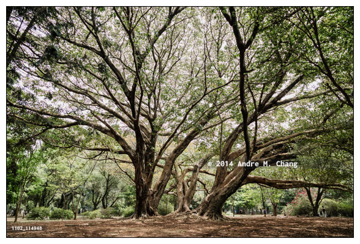(Ficus benghalensis), Sao Paulo, Brazil. (Credit Image: © Andre M. Chang)"
data-large="_project/kacho/588ibirapuera_7587.jpg"> Banyan fig (Ficus benghalensis)
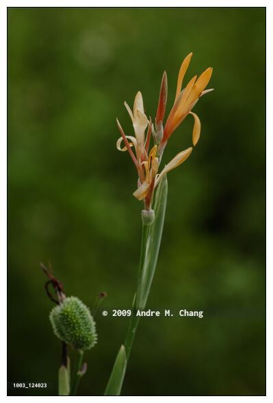Canna indica L. var. orientalis (Rosc.) Hook. f., Hualien, Taiwan. (Credit Image: © Andre M. Chang)"
data-large="_project/kacho/588canna0086.jpg"> Canna flower (Canna indica L. var. orientalis)
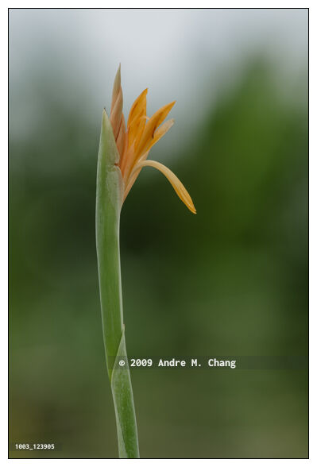Canna indica L. var. orientalis (Rosc.) Hook. f., Hualien, Taiwan. (Credit Image: © Andre M. Chang)" data-large="_project/kacho/588canna0084.jpg"> Canna flower (Canna indica L. var. orientalis)
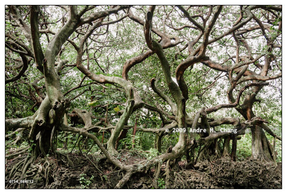Ficus virgata (Reinw. ex Blume), Taitung, Taiwan. (Credit Image: © Andre M. Chang)" data-large="_project/kacho/588banyan_8814.jpg"> White fig tree Ficus virgata (Reinw. ex Blume)
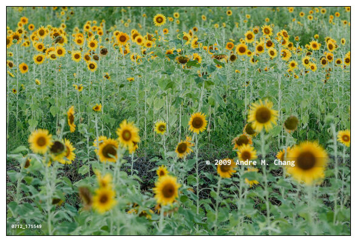(Helianthus annuus), Hualien, Taiwan. (Credit Image: © Andre M. Chang)" data-large="_project/kacho/588sunflower_8797.jpg"> Sunflowers (Helianthus annuus)
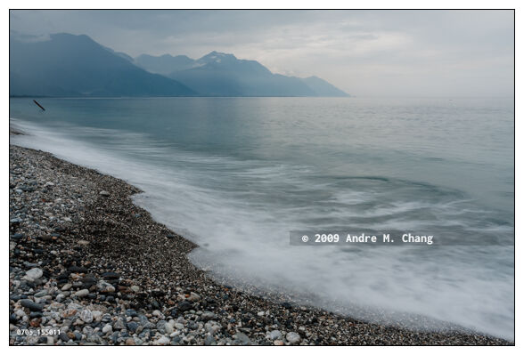 Pebbles beach
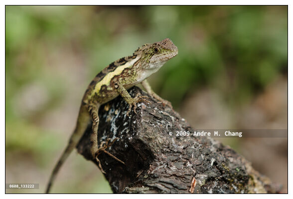(Japalura swinhonis, Diploderma swinhonis) tree lizard, Hualien, Taiwan. (Credit Image: © Andre M. Chang)" data-description="Swinhoe's japalura (Japalura swinhonis, Diploderma swinhonis) tree lizard, Hualien, Taiwan. (Credit Image: © Andre M. Chang)" data-large="_project/kacho/588small-lizard-7577.jpg"> Swinhoe's japalura (Japalura swinhonis)
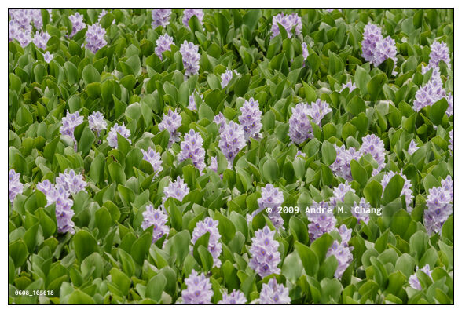, Hualien, Taiwan. (Credit Image: © Andre M. Chang)" data-description="Common water hyacinth (Eichhornia crassipes), Hualien, Taiwan. (Credit Image: © Andre M. Chang)" data-large="_project/kacho/588eichhornia_crassipes_7545.jpg"> Common water hyacinth (Eichhornia crassipes)
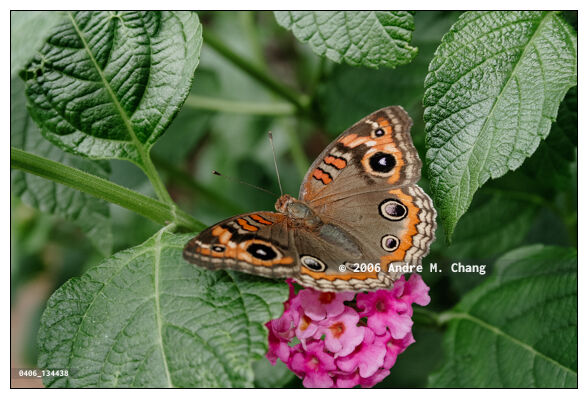 butterfly feeds on nectar from common lantana (Lantana camara) flower, Asuncion, Paraguay. (Credit Image: © Andre M. Chang)"
data-description="A mangrove buckeye (Junonia genoveva) butterfly feeds on nectar from common lantana (Lantana camara) flower, Asuncion, Paraguay. (Credit Image: © Andre M. Chang)"
data-large="_project/kacho/588junonia_5661.jpg"> Mangrove buckeye (Junonia genoveva) butterfly
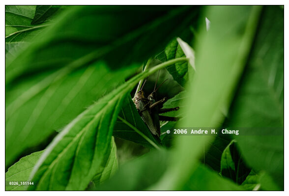(Coryacris angustipennis) mates on leaf, Asuncion, Paraguay. (Credit Image: © Andre M. Chang)"
data-large="_project/kacho/588grasshoppers_5153.jpg"> Pair of grasshoppers (Coryacris angustipennis)
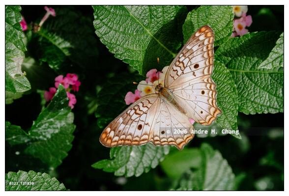(Anartia jatrophae) butterfly feeds on nectar from common lantana (Lantana camara) flower, Asuncion, Paraguay. (Credit Image: © Andre M. Chang)"
data-large="_project/kacho/588anartia_4969.jpg"> White peacock (Anartia jatrophae) butterfly
 Cranes
Cranes